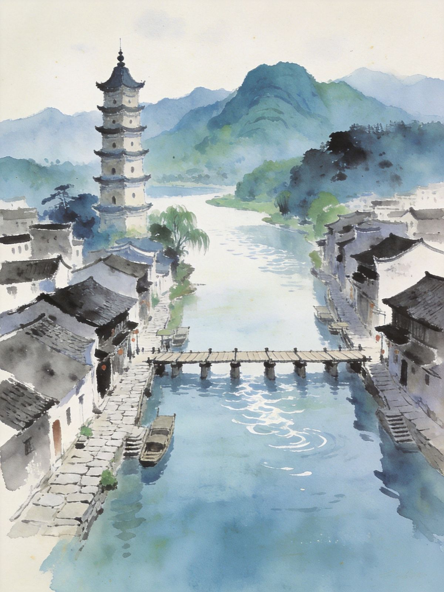
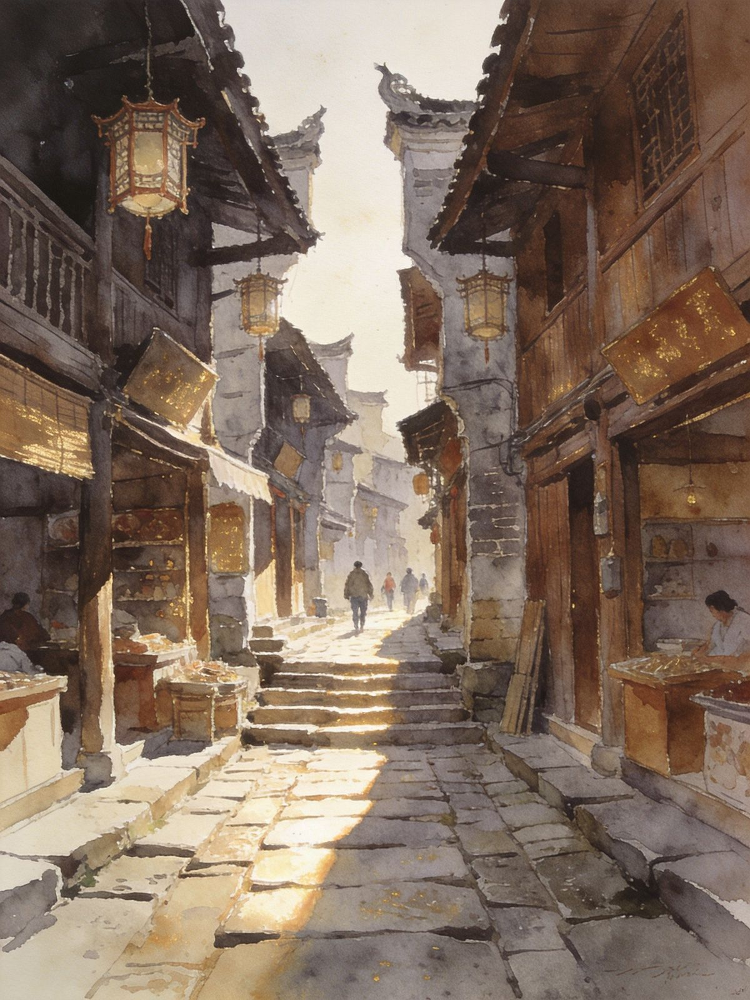

封面
总览
2天版
3天版
零陵古城
舜帝陵
潇湘人文
美食
避坑贴士

YONGZHOU · 永州
潇湘 · 文脉之地
零陵古城 · 血鸭
零陵古城
柳宗元
舜帝陵
永州血鸭
永州之野 · A5 口袋卡 · 文气小城
1
/ 9
永州 · 潇湘文脉
动线总览
2-3 天怎么选
Route Overview
2天
1夜
美食 + 古城
D1 零陵古城+柳子街+夜景夜市；D2 柳子庙+浯溪碑林+卤粉返程
3天
2夜
加文化深度
Day1 零陵古城；Day2 浯溪碑林+舜帝陵+九嶷山；Day3 东山+血鸭饕餮返程
核心
文气 + 乡味
柳宗元「永州八记」故地，血鸭东安鸡好吃到惊艳
TIP
别被「永州之野产异蛇」吓到，那是文学意象；
现在是一座安静祥和的文气小城
。
2
/ 9
永州 · 潇湘文脉
2天1夜 · 不绕路
Day·1
古城 + 夜市
抵永州站
→
零陵古城
→
柳子街
→
潇水浮桥夜景
→
夜市卤粉
🏯 零陵古城
柳宗元「永州八记」故地，青石板街道 + 潇水
夜晚亮灯后浮桥沿岸最出片
Day·2
人文 + 返程
柳子庙
→
朝阳岩
→
东山景区
→
顺路浯溪碑林
→
返程
🖋 文气之游
柳子庙（25元）、朝阳岩摩崖石刻、东山景区回龙塔
回程前把卤粉 + 血鸭安排上
TIP
2天版
把零陵+美食玩透
，舜帝陵留到3天版。
3
/ 9
永州 · 潇湘文脉
3天2夜 · 文化深度
Day·1
古城人文
零陵古城
→
柳子街
→
东山景区
→
夜市
🏯 古城深度
柳子街古意最浓，柳子庙、霞客渡浮桥
Day·2
碑林 + 帝陵
浯溪碑林
→
舜帝陵 · 九嶷山（宁远）
🏛 寻根 + 碑刻
舜帝陵
华夏人文始祖，宏伟陵园+古柏
车程约1.5-2h，需包车/自驾
Day·3
收尾返程
重修零陵
→
血鸭饕餮
→
返程
TIP
舜帝陵远，
只放进3天版
；2天专心古城与美食。
4
/ 9
永州 · 潇湘文脉
古城人文线
零陵古城
Lingling Old Town
📍 核心
柳子街
— 柳宗元贬谪故居所在，古意最浓
柳子庙
— 纪念柳宗元的祠庙（25元）
霞客渡浮桥
— 徐霞客走过的潇水浮桥，夜景很美
东山景区
— 回龙塔、武庙等古建集中
两千多年历史 · 潇湘古城 · 免费逛

柳子街 · 石板时光
TIP
古城免费，柳子庙约25元；
夜晚亮灯后浮桥最出片
。
5
/ 9
永州 · 潇湘文脉
寻根线 · 宁远
舜帝陵 & 九嶷山
Emperor Shun Mausoleum
🏛 华夏寻根圣地
舜帝陵
— 中华人文始祖舜帝葬于宁远九嶷山
宏伟陵园建筑群，赏古柏与祭祀文化
九嶷山
— 舜帝峰、斑竹林，山水与传说交织
🗺 怎么安排
永州市区→宁远约
1.5-2h
，需包车/自驾
3天版
的最优文化高潮
舜帝陵 · 古柏大殿
TIP
寻根祭祖 + 山水，
适合时间宽裕的文化旅行者
。
6
/ 9
永州 · 潇湘文脉
碑刻文脉
碑林与文学
Steles & Literature
🖋 值得去
浯溪碑林（祁阳）
— 全国重点文保，历代摩崖石刻荟萃
柳子庙与愚溪
— 柳宗元文学生活圈
朝阳岩石刻
— 文人墨客题刻密集
📚 人文高度
柳宗元 → 摩崖石刻，碑刻诗文山水交融
文学/书法爱好者会收获超预期惊喜
TIP
普通游客当
安静古城游
就好，同样充实。
7
/ 9
永州 · 潇湘文脉
湘南味道
永州必吃
Local Flavors
🍜 永州三件套
永州卤粉
— 爽滑粉+香辣卤汁，早餐灵魂
永州血鸭
— 鸭血裹鸭肉，香辣浓油下饭神器
东安鸡
— 湘菜名菜，酸辣鲜嫩，国宴蓝本
🐚 乡土味
喝螺
— 嗦螺钳螺，夜市烟火气
潇水鱼 / 苦瓜炒肉
— 家常湘味不踩雷
TIP
永州好吃程度远超名气，
卤粉当早餐、血鸭当正餐
，别错过。
8
/ 9
永州 · 潇湘文脉
出发前
交通与避坑
Getting Around
🚄
怎么去
高铁到
永州站
（市区）转公交/打车到零陵古城约十几分钟
🏯
古城分散
各区较分散，自驾/打车比步行切换快
🌶️
湘南偏辣
吃不了辣提前跟店家说
🗺
舜帝陵远
别排进2天版；可串永州↔长沙/衡阳同程
🍽️
永州之野那两句
是柳宗元文学意象，日常菜不涉及驴/蛇
9
/ 9
← 返回小册子主目录
Insta360
记录美好
记录美好生活
相机指南 · CAMERA GUIDE